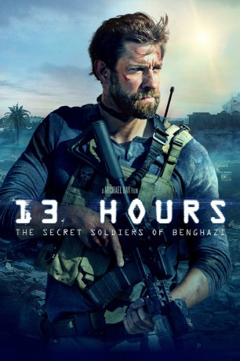
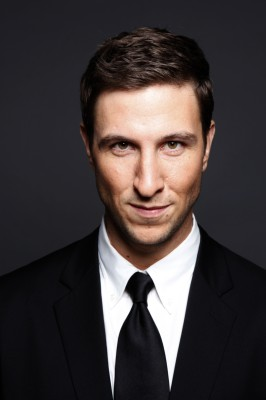
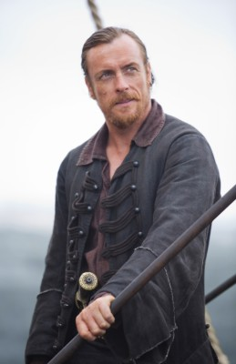
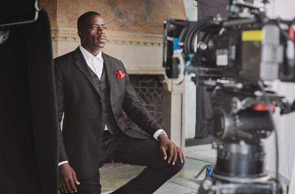
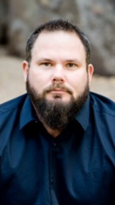
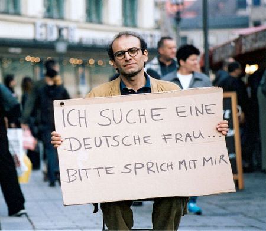

#3785 13 Hours: The Secret Soldiers of Benghazi
 gesehen am 11.11.2016
gesehen am 11.11.2016
 
 IMDB-Wertung: 7.3 / 10
IMDB-Wertung: 7.3 / 10  Tomatometer: 51
Tomatometer: 51  Metascore: 0
Metascore: 0 
Bengasi im afrikanischen Libyen: 13 Stunden lang werden alle Beteiligten in Atem gehalten, als das abgesicherte Gelände eines US-Diplomatensitzes von libyschen Terror-Milizen angegriffen wird. Als besonders alarmierend empfinden die Wachleute die Tatsache, dass die Attacke am 11. September 2012 stattfindet, also auf den Tag genau elf Jahre nach den Terror-Anschlägen auf das World Trade Center in New York City und das Pentagon. In der direkten Nachbarschaft liegt ein geheimer CIA-Stützpunkt, dem kein Befehl erteilt wird, helfend einzugreifen. Doch der ehemalige Soldat Jack und seine Kollegen Tanto, Boon, Rone , Glen und Oz wollen nicht tatenlos zusehen, wie die Botschaft überrannt wird, und sie entschließen sich zu einem 13-stündigen, unautorisierten Einsatz zur Rettung ihrer Landsleute.
Jahr: 2016
Dauer: 144 Minuten
FSK: 16
Land: USA Studio: Paramount PicturesTonspuren: DD5.1 - ,
Untertitel: Deutsch, Englisch,
Auflösung: 1080p (1920x800) Größe: 8529 MB
Genre: Action, Thriller, Drama, Krieg
Regisseur:  Michael Bay
Michael Bay
Drehbuch: Gate Filmproduktion
Soundtrack:
Darsteller:
 John Krasinski als Jack Silva
John Krasinski als Jack Silva James Badge Dale als Tyrone 'Rone' Woods
James Badge Dale als Tyrone 'Rone' Woods-  Pablo Schreiber als Kris 'Tanto' Paronto
 David Denman als Dave 'Boon' Benton
David Denman als Dave 'Boon' Benton Dominic Fumusa als John 'Tig' Tiegen
Dominic Fumusa als John 'Tig' Tiegen Max Martini als Mark 'Oz' Geist
Max Martini als Mark 'Oz' Geist- Alexia Barlier als Sona Jillani
 David Costabile als Bob
David Costabile als Bob- Peyman Moaadi als Amahl
 Matt Letscher als Ambassador Chris Stevens
Matt Letscher als Ambassador Chris Stevens-  Toby Stephens als Glen 'Bub' Doherty
-  Demetrius Grosse als DS Dave Ubben
- David Giuntoli als DS Scott Wickland
-  Kevin Kent als DS Vincent
- David Furr als DS Alec
 Freddie Stroma als Brit Vayner
Freddie Stroma als Brit Vayner Kenny Sheard als Delta Operator
Kenny Sheard als Delta Operator- Andrew Arrabito als Delta Operator
- Christopher Dingli als Sean Smith
 Manuel Cauchi als Fahreed
Manuel Cauchi als Fahreed- Frida Cauchi als Fahreed's Wife
- Joost Janssen als Tripoli GRS Operator
- Davide Tucci als Defense Attache
-  Husam Chadat als Roadblock Leader
- Joe Azzopardi als 17 Feb Militiaman
- Wrenn Schmidt als Becky Silva
- Ivy George als Emily Silva
- Julia Butters als Beverly Silva
- Shane Rowe als CIA Annex Cook
- Kerim Troeller als CIA Annex SPO
- Andrei Claude als Militiaman at Roadblock
- Ben Youcef als Azaan
- Julie Daniels als GRS Wife
 Sope Aluko als BBC News Anchor , uncredited
Sope Aluko als BBC News Anchor , uncredited- Elektra Anastasi als CIA Agent , uncredited
- Len Anderson IV als F-16 Pilot #1 , uncredited
- Larissa Bonaci als CIA Agent , uncredited
- Marc Cabourdin als CIA Agent , uncredited
- John Deignan als General Carter Ham , uncredited
- Liisa Evastina als CIA Agent , uncredited
- Adam Lieberman als Brigadier General Willis , uncredited
- Erica Muscat als CIA Operative , uncredited
- Gregory Niebel als Sculptor , uncredited
- Alan Paris als Deputy Chief , uncredited
 Tim Powell als General Coin , uncredited
Tim Powell als General Coin , uncredited- Jonathan Pyatt als CIA Operative , uncredited
- Nikovich Sammut als Security Police Officer , uncredited
- Steffi Thake als Chief's Assistant , uncredited
- Mike Moriarty als DS Wesley
- Abdesselam Bouhasni als Tracksuit Militiaman
Datei: X:\2016(A-F)\13 Hours The Secret Soldiers of Benghazi (2016, FSK16, 1920x800).mkv seit 13.06.2016
Festplatte: HD 2016(A-Z)
 Es gibt insgesamt 147 Filme in der Gruppe '2016(A-F)'
Es gibt insgesamt 147 Filme in der Gruppe '2016(A-F)'